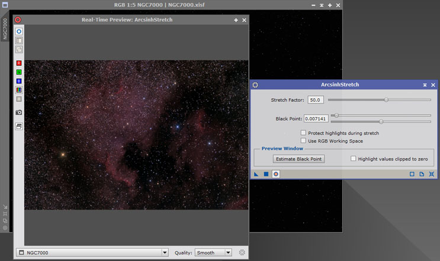
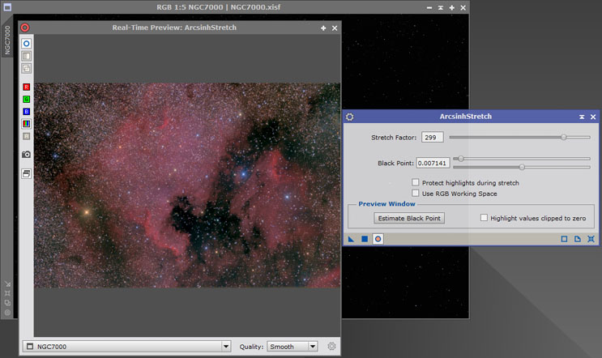
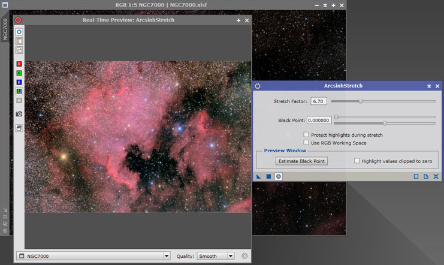
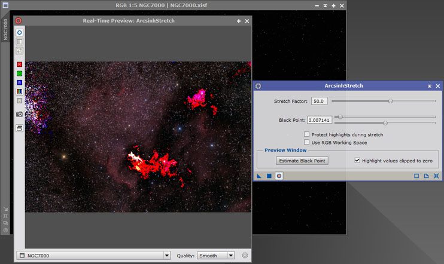

Apply an inverse hyperbolic sine function to the image intensity while preserving the original color. [more]
Categories: IntensityTransformations
Keywords: arcsinh stretch, inverse hyperbolic sine, hyperbolic arcsine, intensity transformation, color preservation
[hide]
[hide]
Arcsinh stretch is a method of stretching image data while preserving the orignal color (i.e. the original R,G,B ratios) in every pixel of the image. Color is retained from the very faintest object to the very brightest unsaturated star. Contrast this to a traditional gamma curve stretch where the brighter objects become desaturated (i.e. bleached) during the stretch.
The user interface has been kept as simple as possible. There are two important parameters: the black point and the stretch factor. The process also relies very heavily on the real-time preview window, so the results can be judged interactively while adjusting the sliders that control those two key parameters.
The ArcsinhStretch process is designed to be run on linear (i.e. unstretched) data which has been white balanced and background extracted. When using the real-time preview window, a screen transfer function should not be active because this will upset the appearance of the data in the real-time preview window.
[hide]
The Stretch factor slider has a logarithmic response which allows the same degree of relative control at each end of the scale, i.e. near 1 and near 1000. Values near 1.0 are useful when applying a second iteration of ArcsinhStretch, for instance.
Note that when stretching the faint signal, the background noise is amplified by the same stretch factor. This amplified background noise will typically be the main constraint on how much stretch you wish to apply. If the maximum stretch level of 1000 is insufficient, then a second iteration of ArcsinhStretch can be applied to the image.
In the example below, the black point has been set and a stretch factor of 50 has been used:
Increasing the stretch factor to 300 makes a big difference to this image:
Useful Hint: For some images it can be advantageous to apply the stretch iteratively. For instance, the example below shows the third iteration using a stretch factor of 6.70. Since the product of 6.7 three times is approximately 300 (6.7 × 6.7 × 6.7 = 300.7), the effect is similar but not identical to the above single stretch of 300. However, the iterative approach has made the nebulosity appear more dramatic.
On the ArcsinhStretch interface it can be seen that the black point adjuster has two sliders. Users of the Convolution process will already be familiar with the concept of having two sliders to control a single parameter, one being a coarse adjustment and the other being a fine adjustment.
The lower slider of the two is for fine adjustment. Think of it as analogous to a fine focusing knob. The slider re-centers itself whenever you move the mouse away from the slider, so you can always finely adjust both up and down from the background level you already have.
The black point has six decimal places of precision, and using the keyboard Up/Down arrows on the fine adjustment slider will nudge the final digit. PgUp/PgDn gives an adjustment 10x as much. The mouse wheel gives an adjustment 3x as much. Failing that, just type the background number in the box—it's easy to overtype the final digit as required.
When stretching by a factor of 100 or more, the very tiniest adjustment of the background value makes a very noticeable difference to the image, because its effects are also magnified by a factor of 100 or more! However, the keyboard keys Up, Down, PgUp, PgDn and the mouse wheel work fine for nudging the value.
Useful Hint: It is easiest to set the black point with the real-time preview window activated and with the highlight clipped values option enabled.
Stretching the image data can cause some data values to saturate (i.e. clip with a value of 1.0). The Protect highlights option will identify such pixels and linearly scale the whole image to avoid any individual pixel values becoming saturated. This will make the final image to appear darker.
For users who want a mathematical example of how such clipping can occur, consider an image pixel with RGB value (0.98, 0.25, 0.25). Since the luminance is less than 1.0, the image pixel will be stretched and this could force the red component to exceed 1.0 and therefore clip.
However, there is a known issue with the Protect highlights option. Under some circumstances the stretched image will end up darker than indicated by its real-time preview. This is because the real-time preview works on a smaller sample of the whole image and may not see some of the brighter pixels that exist in the entire image.
By default, the luminance value of the pixel is calculated from equally weighted RGB values (1/3, 1/3, 1/3). Setting the Use RGB working space option will use whatever weights are used by the current RGB Working Space (RGBWS); e.g. (0.22, 0.72, 0.06). These weights can be changed by applying the RGBWorkingSpace process to the data. This can have subtle but interesting results because although individual pixels will still have the correct color balance after stretching, the RGBWS can affect the look of the image as a whole by for instance, emphasizing or de-emphasizing areas of red H-alpha emissions or blue reflection nebulosity.
[hide]
The ArcsinhStretch process has been designed to be simple, intuitive, and fast to use. When using it for the first time, simply perform the following steps:
The ArcsinhStretch process works best on linear data that has been white balanced and background extracted. The data should also be linear, i.e. no previous non-linear transformation should have been applied (e.g. by using CurvesTransformation, or by adjusting the midtones on HistogramTransformation). In addition, if it is desired to take advantage of the powerful real-time preview, it is important that no STF (screen transfer function) is active on the image.
The real-time preview functionality is a key element for obtaining good results, but first make sure that a screen transfer function is not active because that will upset the appearance of the preview.
The real-time preview window is activated in the usual manner, by clicking the Real-Time Preview icon on the bottom left of the tool. When the real-time preview window is activated, the Estimate Black Point button and Highlight values clipped to zero check box are no longer greyed out. They are explained in the next sections.
This control is accessible only when the real-time preview window is active, and only affects what is displayed in the real-time preview window. The color of the highlighted pixels indicates which colors have been clipped to zero.
In the example above, the highlighted pixels are mainly red. This shows that the red channel is weaker and is the first to clip. It might be an indication that better background modeling and correction is required. As the black point level is increased, the red and green channels will also clip, and the color of the highlighted pixels will turn to white.
Useful Hint: Temporarily reduce the stretch factor to make it easier to distinguish the highlighted clipped pixels from the rest of the image.
This control is accessible only when the real-time preview window is active. It will set the black point at a level where a 2% of pixel values are clipped to zero. This provides a good starting point in most cases. Sometimes the clipped values are clumped together in a few areas of the image rather than being spread across the image. This might indicate that further work is required on background modeling and correction.
From this starting point of 2% pixel clipping, the fine adjustment slider can be used to adjust the black point up or down, according to preference.
In the example above, the Estimate Black Point button has been clicked to estimate and set the black point, and the Highlight values clipped to zero option is activated. The user can then judge whether to adjust the black point up or down from this level.
The following is a list of known issues of which the user should be aware.
[hide]
There is actually no need to restrict the functional form of the transfer fucntion to be the inverse hyperbolic sine. Any kind of "curves" function will do just as well. The key point is that to preserve color the calculated pixel multiplier must be simultaneously applied to all channels (R,G,B) in the pixel.
[hide]
The methodology is based on a paper by Lupton et al.[1] whose aim was to stretch astronomical images in such a way that color, especially star color, is preserved.
The image data is first scaled into the range [0,1] and then a transfer function is applied to the luminance to boost the intensity of the faint data. The inverse hyperbolic sine (or hyperbolic arc sine) is the tranfer function suggested by the paper. This function is linear near zero and becomes increasingly logarithmic as it approaches unity. Lupton's paper specifies a softening parameter, namely , whose purpose is to control the point at which the gradual change from linear to logarithmic takes place. Color preservation is ensured by applying the same multiplier to the nominal RGB color components.
The softening factor used by Lupton is rather unintuitive, so in this implementation a more intuitve stretch factor has been introduced in its place. This is the multiplicative scalar that is applied to the faintest parts of the image. Internally, the ArcsinhStretch process calculates the required softening factor that achieves the amount of stretch requested by the user. This can be written as follows:
where , , are the nominal components in the RGB color space in the range [0,1], is the softening factor, is the calculated stretch factor, and , , are the resulting stretched color components.
Note that when (i.e., when the luminance is at its maximum value of one) no stretching takes place because is also one. When the stretch factor is , which is the asymptote of as reduces to zero.
The ArcsinhStretch process calculates the value of the softening factor which gives the user-requested stretch at .
[1] Robert Lupton et al. (2004), Preparing Red-Green-Blue (RGB) Images from CCD Data, Publications of the Astronomical Society of the Pacific, 116:133–137
Copyright © 2017 Mark Shelley. All Rights Reserved.